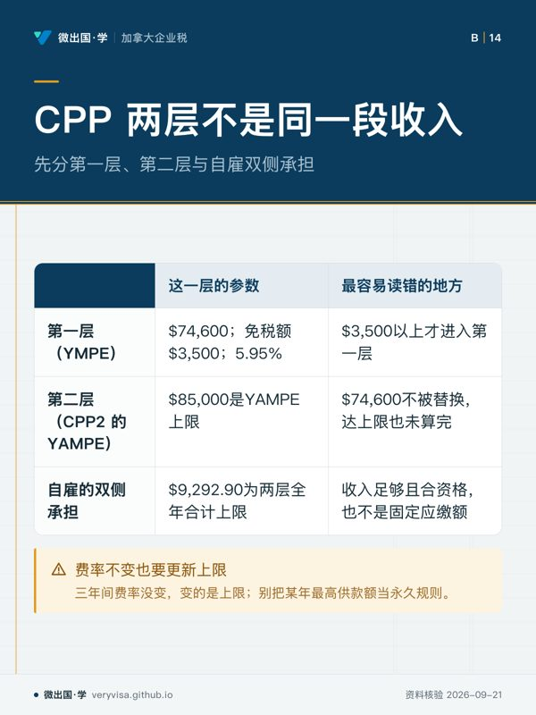
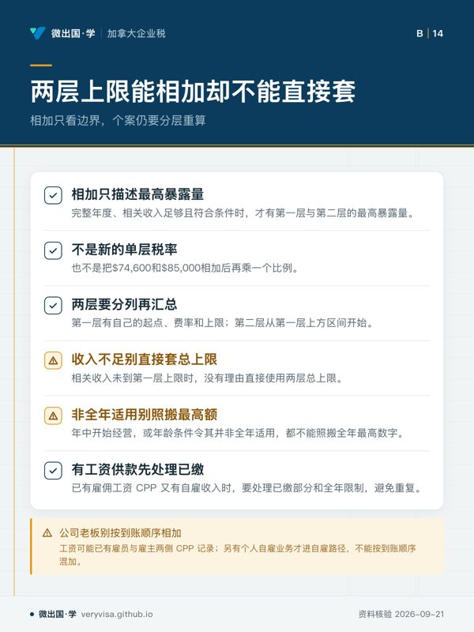
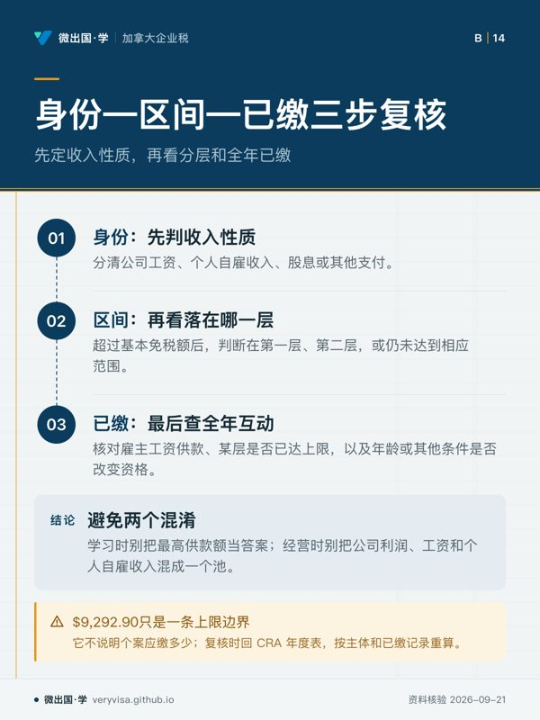
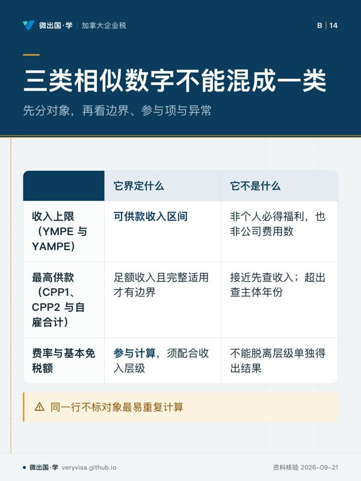

核实日期：2026-10-30｜本页口径：2026 税年 CPP 两层供款；公司工资、股息与个人自雇收入必须先分开。
开了公司的老板常把 CPP 记成一个「最高供款额」，然后不分收入来源往上套。CPP 先问钱是以什么身份拿的，再问它落在哪一层，最后看当年已经交了多少。这一页帮你分清工资、股息、自雇三条线各交多少 CPP，并用 2026 年的实数算一遍。
一、三条线，三种结果
公司发的工资。 公司是雇主，老板是雇员——即使老板持有公司全部股份，工资照样是可供款收入。公司按工资代扣雇员那一份 CPP，再自己交一份同额的雇主份额，雇主份额是公司的可扣费用。控股股东的工资通常不可保 EI（持有 40% 以上表决权股份时），但这条豁免只管 EI，不管 CPP。
公司派的股息。 股息不是劳动收入，不交 CPP，也不积累 CPP 退休金权益。只拿股息的老板当年 CPP 供款为零，将来的 CPP 退休金也相应变少——这是「工资还是股息」取舍里常被漏掉的一项（见 ca-corporate-03）。
个人名下的自雇收入。 没有放进公司的生意按 T2125 报，净利润在 Schedule 8 上计算 CPP，雇员与雇主两份都由本人交。公司账上的利润不是老板个人的自雇收入，不能拿公司净利润去套自雇 CPP。
二、2026 税年的两层参数
| 项目 | 2026 税年 | 说明 |
|---|---|---|
| 基本免税额 | $3,500 | 不指数化；全年适用，年龄等特殊年份按月折算 |
| 第一层上限 YMPE | $74,600 | 第一层可供款收入的上限 |
| 第一层费率 | 雇员 5.95%＋雇主 5.95%（自雇 11.9%） | 2024–2026 未变 |
| 第一层最高供款 | 雇员 $4,230.45；自雇 $8,460.90 | (74,600 − 3,500) × 费率 |
| 第二层上限 YAMPE | $85,000 | 第二层（CPP2）覆盖 $74,600 至 $85,000 这一段 |
| 第二层费率 | 雇员 4%＋雇主 4%（自雇 8%） | |
| 第二层最高供款 | 雇员 $416；自雇 $832 | (85,000 − 74,600) × 费率 |
| 两层合计最高 | 雇员 $4,646.45；自雇 $9,292.90 | 只有收入达到 $85,000 才封顶 |
两层分开算再相加：第一层从 $3,500 算到 $74,600，第二层从 $74,600 算到 $85,000。把 $74,600 和 $85,000 相加再乘一个费率，或者对收入不到上限的人直接套 $9,292.90，都是错的。
三、三个算例（2026 税年，人名与数字均为示例）
老林只从公司领工资 $90,000。 雇员份：第一层 $4,230.45，第二层 $416，合计 $4,646.45 从工资里代扣；公司另交同额 $4,646.45。两边加起来正好是 $9,292.90，和一个净利润 $90,000 的自雇者交的总额一样——区别在于其中一半由公司交、在公司层面扣除。
老林改为全部拿股息 $90,000。 CPP 供款为零，当年也不积累 CPP 权益。个人税另按股息规则算。
老林领工资 $40,000，另有一门个人名下的自雇生意，净利润 $50,000。 工资部分雇员代扣第一层 ($40,000 − $3,500) × 5.95% ＝ $2,171.75，公司另交同额。到了 Schedule 8，两项收入合并为 $90,000：第一层按自雇口径全年应交 ($74,600 − $3,500) × 11.9% ＝ $8,460.90，减去工资上已交的两份 $2,171.75 × 2 ＝ $4,343.50，自雇部分还要交 $4,117.40；第二层合并收入超过 $85,000，工资上没交过 CPP2，自雇部分交满 $832。他个人一共交 $2,171.75 ＋ $4,117.40 ＋ $832 ＝ $7,121.15，加上公司那份 $2,171.75，合计仍是 $9,292.90，不会因为两条线各自算满而重复。
四、什么时候不能用全年数字
满 18 岁那一年、满 70 岁那一年、65 至 70 岁之间选择停缴的那一年、开始领 CPP 残障福利的那一年以及去世那一年，上限与 $3,500 基本免税额都按符合条件的月数折算。年中才开始经营生意不触发折算，仍用全年数字。
五、常见误判
- 把公司全年净利润当作老板的自雇收入，再按 11.9% 算 CPP——公司利润不是个人劳动收入。
- 以为控股股东领工资不用交 CPP——不可保的是 EI，CPP 照交。
- 只拿股息却以为 CPP 权益照常累积——股息不产生 CPP 权益。
- 同时有工资和自雇收入，两边各自按上限算满——Schedule 8 会把工资上已交的两份先扣掉。
- 收入不到 $85,000 却直接写 $9,292.90——那是封顶数，不是应缴数。
延伸阅读
论坛全文：加拿大 2026 CPP：公司老板领工资、自雇和分红要分三条线
听、看、翻：自雇与公司老板CPP
AI 生成的中文讲解，经逐字稿核对；数字以本页正文与官方现行页面为准。
AI 生成的中文讲解，经逐字稿核对；数字以本页正文与官方现行页面为准。
本页知识卡
不看正文也能拿到这一节的核心内容：先看导读，再看图。点图放大，左右翻页。
- 先看阅读时先追资金和文件证据的去向，不要看到经营现金就先算供款。
- 易漏实际是未注册自雇却只按股东分红处理，会漏掉自雇供款判断。
- 下一步去练习：拿一张付款凭证，写出收款方与款项依据。

- 先看先横看三行机制，再用右栏排除错误读法。
- 易漏双侧承担说的是供款责任，不是把公司利润算进个人收入。
- 下一步去知识卡：换一个税年，重新核两层边界。

- 先看读卡时先找适用门槛，再看哪些情形必须重新核算。
- 易漏最危险的不是四舍五入，而是把不同路径各自算到顶。
- 下一步去练习：用工资加自雇的混合案例复核。

- 先看先从付款类型入手，再核分层与既有记录，别从最终金额倒推。
- 易漏同一年里已有工资扣缴时，后面的自雇计算不能另起一套全年额度。
- 下一步去练习：拿混合收入案例走完三步。

- 先看先看三行各自回答哪一种数字问题，再比较左右两栏。
- 易漏费率不变也要重核上限，本页数字只是核实日快照。
- 下一步去练习：见到上限数字先标对象和税年。